✈️ 현수의 일본 여행 앨범 🇯🇵
오사카, 교토, 그리고 도쿄에서 담아온 잊지 못할 추억들
📸 잊지 못할 풍경들
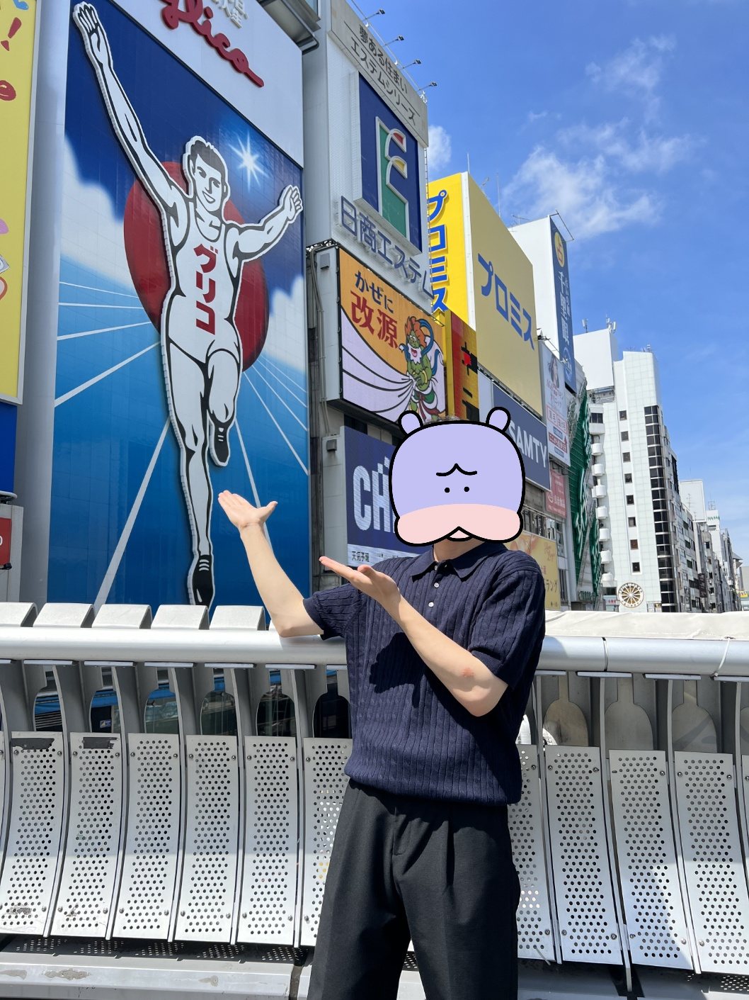
오사카 글리코상
도톤보리의 화려한 네온사인 아래 필수 포토존!
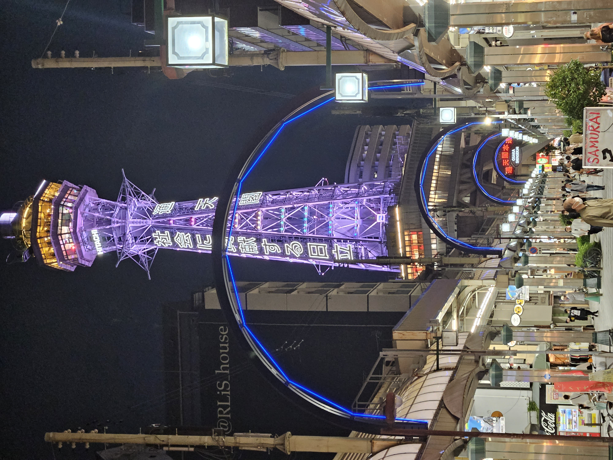
오사카 츠텐카쿠
신세카이 거리의 매력적인 레트로 랜드마크

교토 타워
교토역 앞을 든든하게 지키는 랜드마크
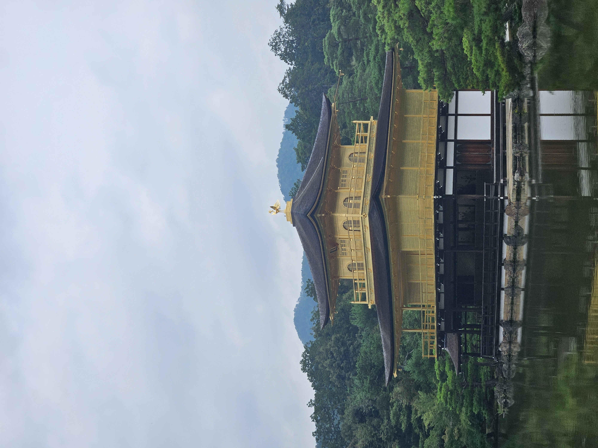
교토 금각사
호수 위에 금빛으로 찬란하게 빛나는 사찰
 교토 아라시야마
교토 아라시야마
바람결에 흔들리는 시원하고 청량한 대나무 숲길
 교토 아라시야마
교토 아라시야마
교토 아라시야마 두 번째 사진
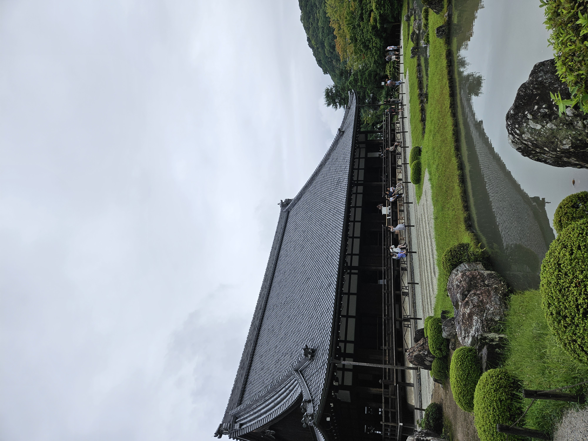
교토 텐류지
아라시야마의 아름답고 고즈넉한 정원
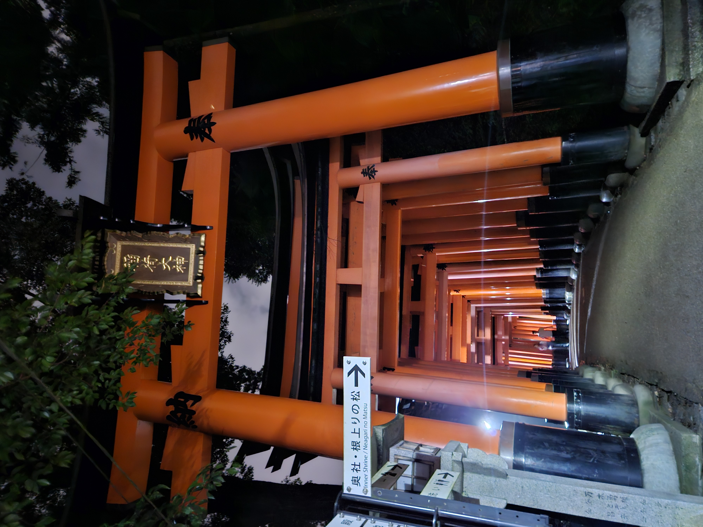
교토 후시미 이나리
붉은 도리이가 끝없이 이어지는 신비로운 길

도쿄 타워
붉게 빛나는 도쿄의 낭만적인 상징
🍜 여행 중 맛본 최고의 음식들
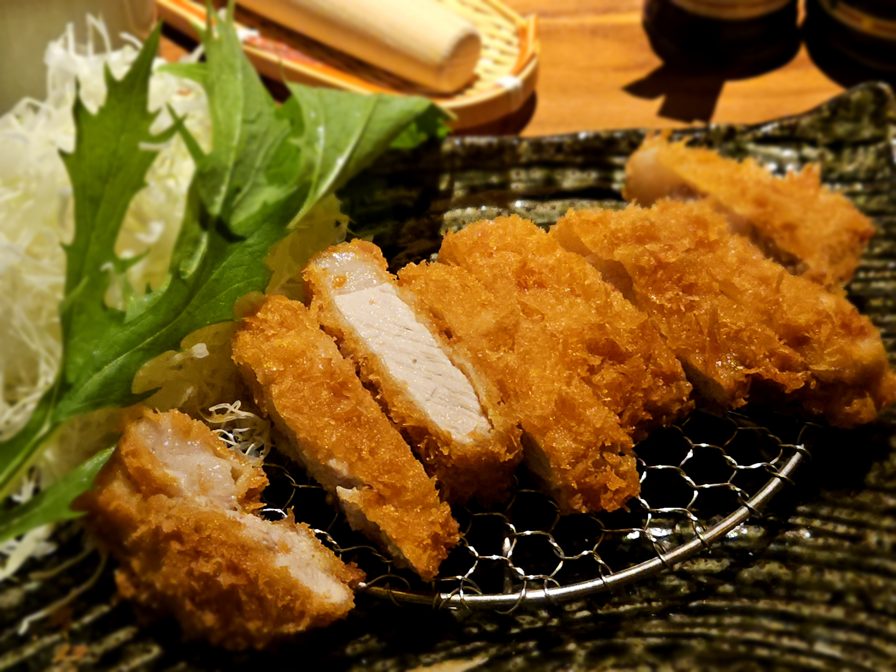
교토 특등심 돈카츠
육즙이 가득한 두툼한 고기와 바삭한 튀김옷의 환상적인 조화

시부야 옴니버스 커피
감각적인 인테리어 속에서 즐기는 향긋하고 깊은 커피 한 잔 ☕
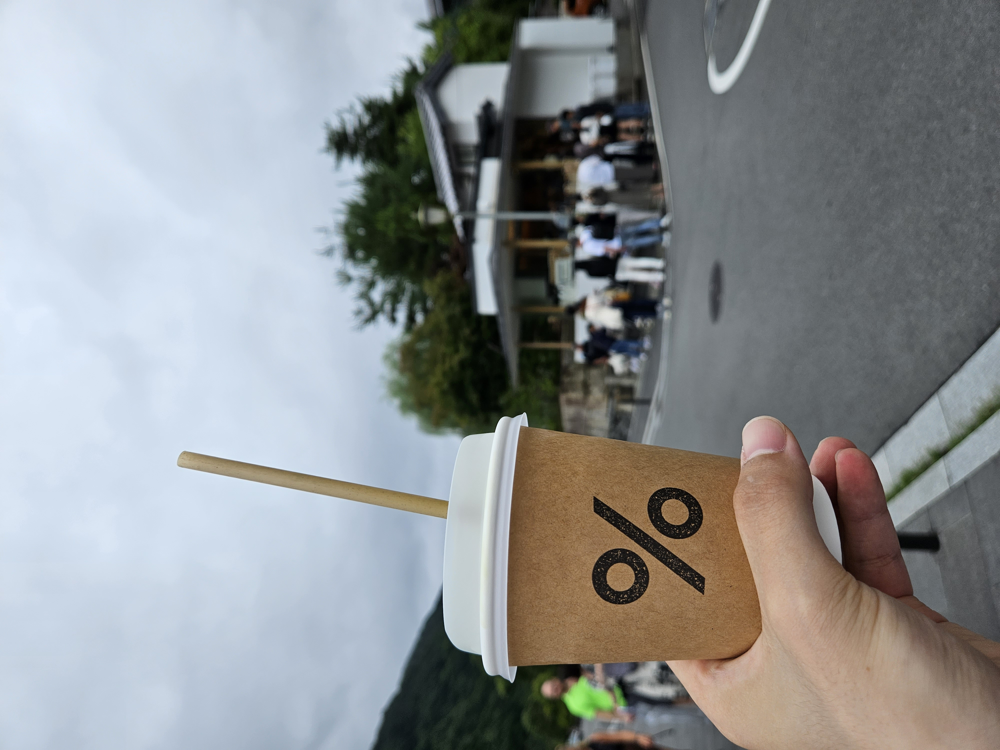
교토 아라비카 커피
교토에서 꼭 맛봐야 할 고소한 교토라떼의 풍미
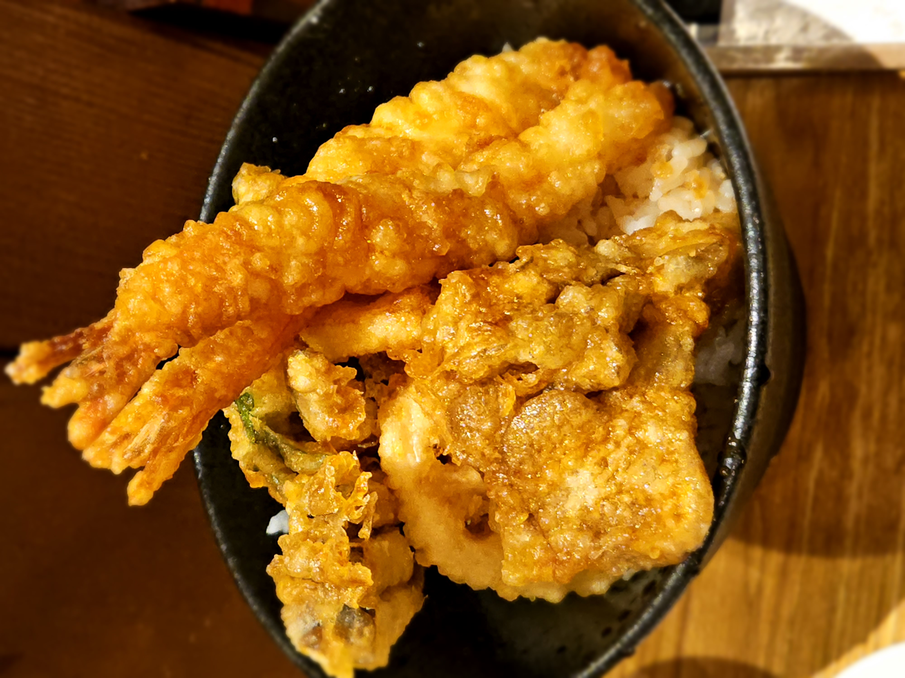
시부야 텐도라 텐동
단짠 소스가 스며든 밥 위에 갓 튀겨낸 튀김
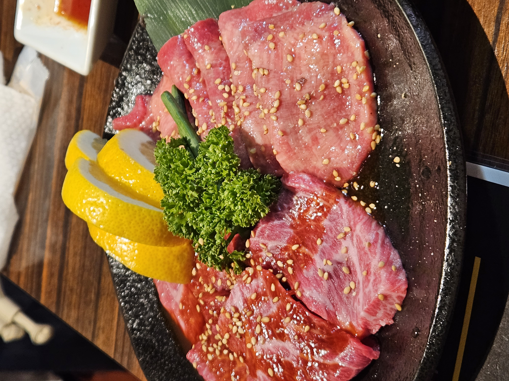
우설
입안에서 녹는 부드러움과 쫄깃한 식감이 매력적
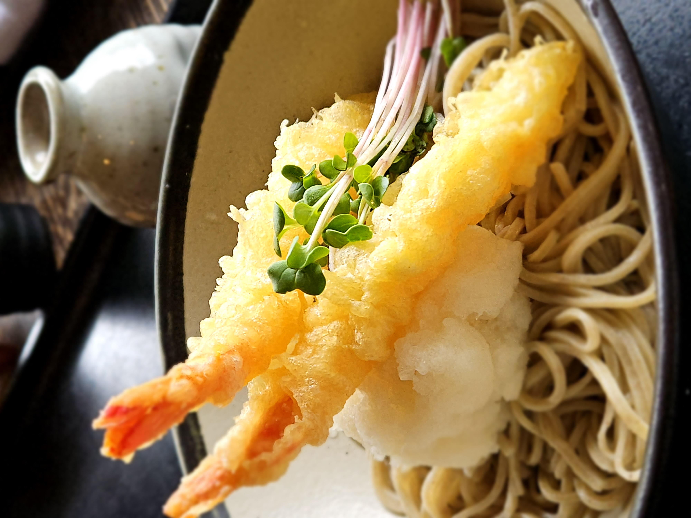
교토 아라시야마 요시무라 소바
깔끔한 쯔유 육수에 쫄깃한 메밀면이 어우러진 시원한 맛
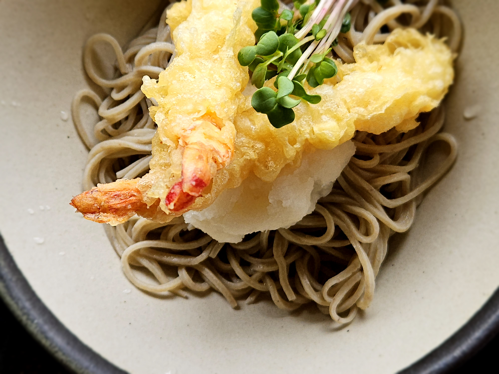
교토 아라시야마 요시무라 소바
교토 아라시야마 요시무라 소바의 두 번째 사진
📹 나의 여행 브이로그
일본 3대 축제 '기온 마츠리' 🏮
교토의 여름을 뜨겁게 달구는 화려하고 웅장한 축제 현장!